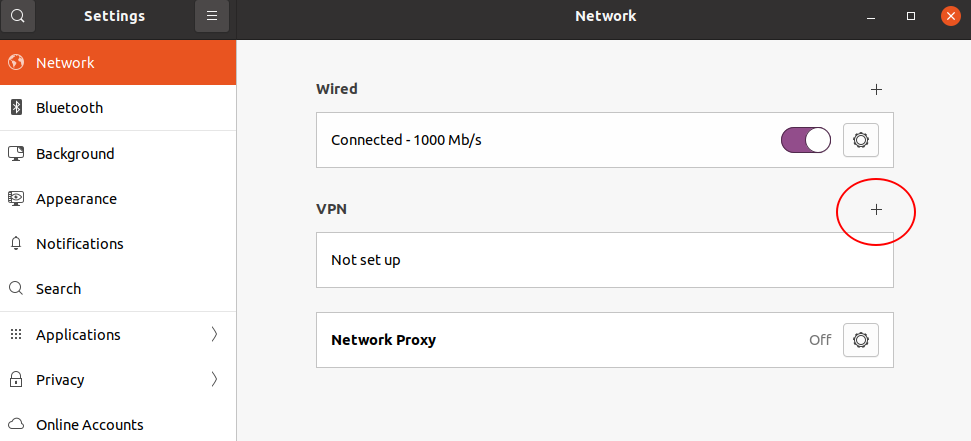
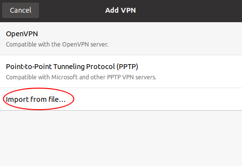
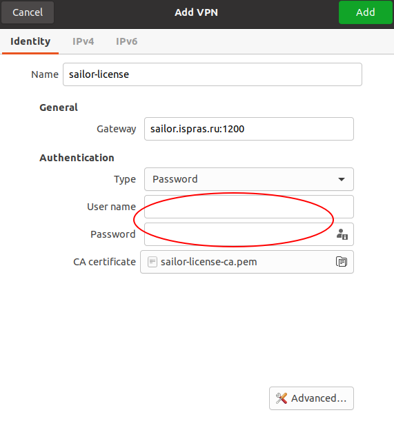
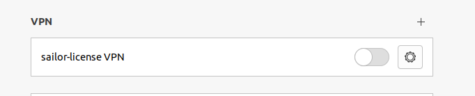
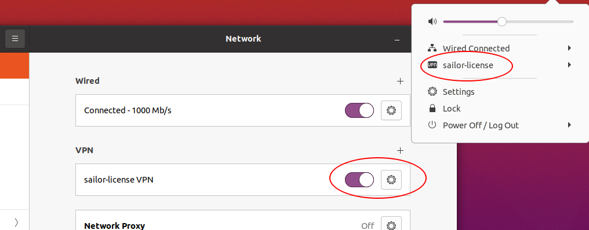

А. Настройка окружения для использования лицензированного Natch
Для использования лицензированной версии инструмента Natch необходимо иметь HASP ключ или сетевую лицензию.
При наличии ключа следует выполнить только пункт 1 из этого приложения. В случае с сетевой лицензией необходимо выполнить все нижеописанные действия.
Все необходимые файлы настройки будут предоставлены пользователю, а именно, пакет aksusbd_current_version_amd64.deb
(Ubuntu, Debian, Astra), файл с конфигурацией vpn *.ovpn и логин/пароль для подключения.
Установить окружение для ключей Sentinel
Для Ubuntu, Debian
Установить deb пакет aksusbd с помощью команды:
sudo dpkg -i aksusbd_*current_version*_amd64.deb
Для Alt
Установить rpm пакет aksusbd и перезапустить службу:
apt-get update && apt-get install eepm && epm play aksusbd
sudo systemctl restart aksusbd
Создать VPN соединение (в качестве примера хостовой системы использована Ubuntu 20.04).
Для этого создания VPN соединения необходимо открыть настройки операционной системы и перейти в раздел Network. В секции VPN нажать на плюсик.

Появится окно для добавления новой конфигурации VPN. Нужный вариант Import from file.., куда следует передать входящий в поставку файл *.ovpn. В предлагаемой ОС OpenVPN установлен по умолчанию.

После импорта файла появится окно настройки соединения, в которое необходимо вписать логин и пароль, так же входящие в поставку.
В этом же окне следует перейти на вкладки IPv4 и IPv6 и установить флажок Use this connection only for resources on its network.
Далее осталось нажать кнопку Add в верхнем правом углу и конфигурация будет создана.

Осталось только включить переключатель напротив VPN и соединение будет установлено.

Кроме того, управлять подключением можно в трее, как показано на рисунке ниже.

Открыть браузер и ввести строку
localhost:1947Откроется главная страница
Sentinel Admin Control Center, на которой нужно перейти в разделConfiguration, в нем найти разделAccess to Remote License Managers.Убедиться, что в поле
Allow Access to Remote Licensesстоит галочка. В полеBroadcast Search to Remote Licensesгалочка стоять не должна.В поле
Remote License Search Parametersввестиlicense.intra.ispras.ruи нажать кнопкуSubmit.
После всех проделанных действий инструмент готов к использованию на вашем компьютере.